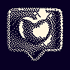
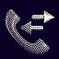
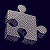

I’m Lucas Roe (I also go by Luck). I am a product design leader. I use a broad range of methodologies to find the path to deliver excellent products.
My background is in User Experience Design, which deeply informs how I engage. I use a human centric set of tools and methods to bridge gaps between end users and team responsible for the product. My experience is comprised of design roles with a growing focus on product direction, strategy, and validation.
I conduct structured conversations that build understanding of user’s true needs, tasks, and environments. I create programs to activate the current customer base to prioritize needs, solve individual problems, and build retention.
Excellent products are made with shared vision. I use internal communications, presentations, and workshops to vet our concepts and build consensus on our execution strategy.
Marrying together quantitative signals with qualitative framing allows us to size effects and verify critical needs. I collect, structure, and humanize data to make it actionable and useful instead of merely pulling metrics.
Large products don’t often get the luxury of building out the full feature set we want for each release. I find solutions that work in layers, achieving MVP while preparing for future improvements.
I have a revolving door of obsessions, so I spend a lot of time reading the whole internet, playing music, creating, fixing things, building things, DIWhy-ing, playing games, and running all over. My wife and I live with our two daughters and a rabbit named Poptart in the woods of central Maryland.
I am open to new opportunities in design and product leadership. I am not currently taking freelance requests. Emails can be sent to lucas@glucasroe.com.
This site is hosted on Github Pages site using Jekyll. Here’s the repo that generates it.